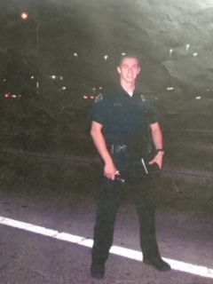

Idaho Protection Services came into exsitence because of the reality that there is a need for the protection of our children. It is up to us to become self aware of the circumstances that now require us to be people who prevent rather than allow and later react. As a former Law Enforcement Officer and U.S. Marine, my training and real world experience, equips me with knowledge in this matter. It is fact: local law enforcement WILL NOT arrive in time to prevent loss of life, in an active shooter situation. I have done extensive training in this matter, and am a certified ALICE (Alert, Lockdown, Inform, Counter, Evacuate) Instructor. Allow me to train your staff on how to best safeguard your children, and let me teach your kids on what to do in this type of emergency.

